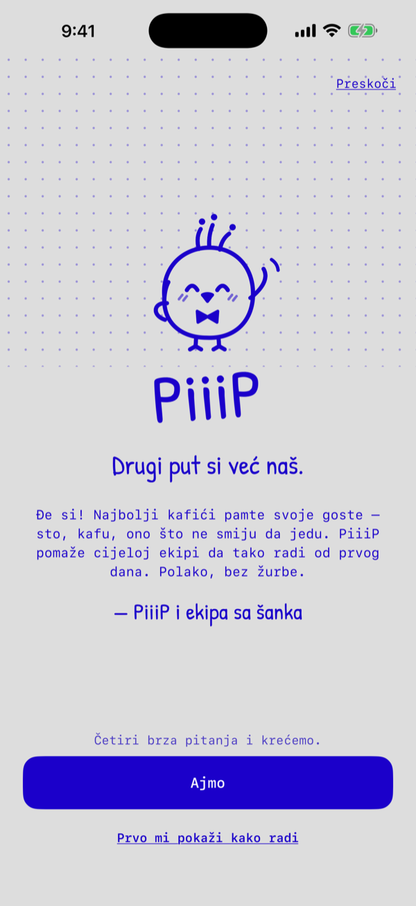

Drugi put si već naš.
Pamćenje konobara za stalne goste.
Đe si! Najbolji kafići pamte svoje goste: sto, kafu, ono što ne smiju da jedu. Gost pokaže svoju PiiiP karticu, ti je skeniraš, a PiiiP ti kaže sve što treba da znaš. Napravljeno za kafiće u Podgorici.

Kad skeniraš gosta
Alergije, uvijek prve
Rečima, ne ikonicama. Tešku alergiju moraš potvrditi sa „Važi“ prije svega ostalog.
Njegova kafa
Produženi, makijato, domaća… sa mlijekom, šećerom i čašom vode sa strane.
Šta da kažeš
„Đe si, Marko! Produženi, kao i uvijek?“
O čemu da pričate
Iz bilješki ekipe: sinoćna utakmica, ime psa, rođendan.
„Đe si, Marko?“
Kad stalni gost ne svrati duže nego inače, PiiiP te podsjeti. I za rođendane, dan ranije.
Poslušaj PiiiP-a
PiiiP je ptić, pa pijuče, ali po podgorički: jedan pijuk za svaki slog, na melodiju rečenice.
Podaci ostaju na telefonu
Nema naloga, nema servera, nema analitike, nema reklama. Kamera samo čita QR kod i ništa ne snima. Besplatno, bez pretplate i bez kupovina u aplikaciji.
In English
The second time, you're already one of ours.
PiiiP is a small, warm app for café waiters. A regular shows their PiiiP card, you scan it, and PiiiP tells you their allergies (always first), their coffee order, how to greet them and something personal to chat about. Guests don't need an app, just the card.
Everything stays on your iPhone: no account, no server, no analytics, no ads. Free, with no subscription. The app itself is in Montenegrin.